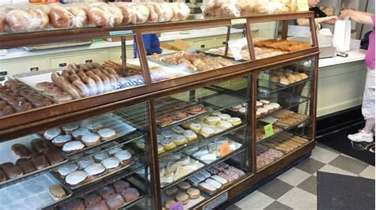
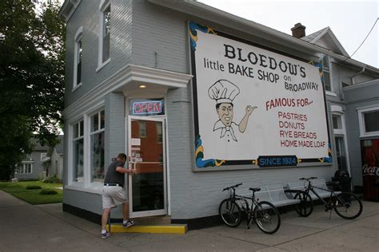

Winona Minnesota - Bloedow's Bakery Page.


History of Bloedow's
Bloedow's started in 1924 by Ernest and Mary Bloedow. The bakery moved a few times, but has been in it's current location since 1925, and the business has been passed down the family. Bloedow's was sold to its current owners in 2004 to people outside the Bloedow family.
Menu
Below are the following specialty donuts sold on each day of the week. *Bloedow's is closed on Sunday's, so there are no specials.
Monday - Bavarian Cream
Tuesday - Lemon
Additionally Whip Cream
Wednesday - Apple
Thursday - Bavarian Cream
Friday - Lemon
Additionally Whip Cream
Saturday - Bavarian Cream
Additionally Blueberry
Bloedow's sells other donuts, pastries, and bread along with the specialty donuts.
Column